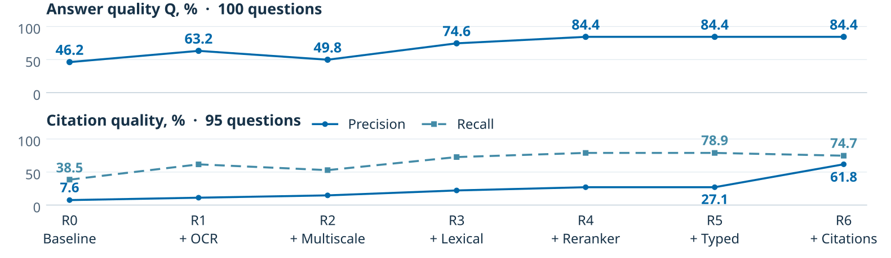
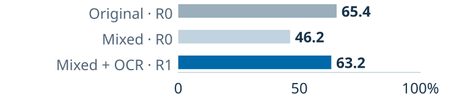

TRENDS IN MACHINE LEARNING II
Building Legal RAG:
what each component contributes
Hypothesis
Research question & rationaleHow can we build Legal RAG with better answers and precise, complete citations?
Legal answers need evidence: readable documents, relevant passages and verifiable page citations.
Testing the complete pipeline
We expect the full pipeline to outperform baseline. H1–H6 test whether each addition improves answer quality or citations.
Prior work: RAG [1], legal retrieval [2], citation evaluation [3]. We test one pipeline, component by component.
Methodology
Sequential component additionsR0 · Baseline. PDF text → 300-token chunks → dense retrieval → answer. Citations include all pages in the supplied context.
Dataset & comparisons
30 DIFC PDFs · 590 pages · 100 questions.
70 structured / 30 free-text answers;
95 questions with gold source pages.
Mixed corpus: 10 PDFs / 107 pages rasterised at 300 DPI. R0–R6 on mixed; R0/R1 also on originals.
Evaluation
Q = 0.7 × S + 0.3 × F. S / F: mean structured / free-text scores; free text is evaluated by an LLM.
Precision: share of cited pages that are gold pages. Recall: share of gold pages that are cited. Both metrics are averaged across questions.
Fixed: GPT-5.4-mini / high; 24 candidates; ≤ 2,400 context tokens. OCR: PP-OCRv5. Embedding / reranker: Qwen3-0.6B.
Results
Baseline R0 → complete pipeline R6Gains are not monotonic. Sequential additions on the mixed corpus:

OCR recovers answer quality

Replacing text PDFs with scans reduces Q from 65.4% to 46.2%. OCR restores it to 63.2%, with no change on the original PDFs.
Hypothesis checks
Supported: H1, H3, H4, H6; not H2 or H5.
Conclusion
Components address different failures: OCR recovers scans; hybrid retrieval and reranking improve answers; citation selection trades some recall for higher precision. Evaluate answers and citations separately.
Scope: development dataset; synthetic scans; LLM-scored free text. One run per condition; statistical significance was not assessed.